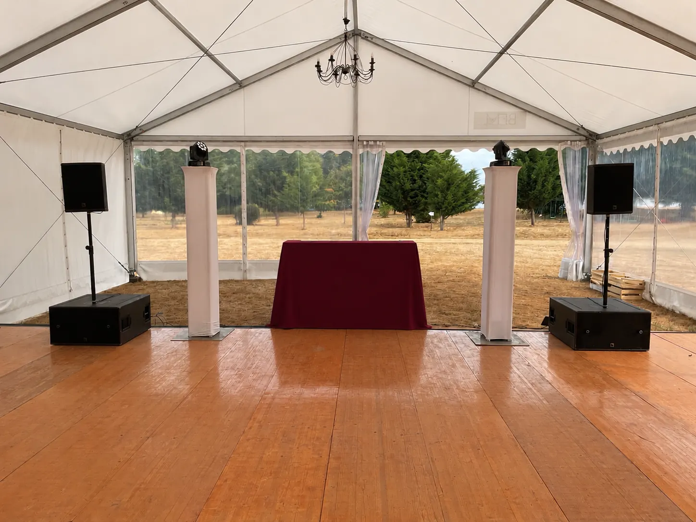

Sonoriser un château, une péniche, une orangerie ou un jardin.
Un lieu historique, une orangerie vitrée ou une péniche parisienne impose des contraintes esthétiques et acoustiques précises. Voici comment nous préparons chaque espace pour préserver le décor tout en gardant un son propre.
Quatre réflexes techniques sur un lieu d'exception
Avant toute prestation en château, hôtel particulier ou extérieur, nous adaptons l'implantation à l'architecture et au voisinage.
- Repérage & implantation sobreVisite préalable si nécessaire, pieds et totems discrets, régie habillée assortie à la salle et câbles dissimulés le long des plinthes.
- Éclairage architectural sans filNos 8 projecteurs PAR LED sur batterie éclairent façades, colonnes et arbres sans traverser les passages avec des rallonges électriques.
- Diffusion multi-zones préparéeSystèmes indépendants pour la cérémonie laïque, le cocktail en extérieur, les discours du dîner et la piste de danse.
- Maîtrise de la réverbérationCalage des enceintes L-Acoustics 12XT et des caissons SB118 sur les zones utiles afin d'éviter la bouillie sonore sous voûte ou chapiteau.



Questions fréquentes
Comment préserver l'esthétique d'un château ou d'un hôtel particulier ?
Nous utilisons des pieds et totems sobres, une régie entièrement habillée et des passages de câbles dissimulés. Pour la mise en lumière des murs, colonnes et voûtes, nos 8 projecteurs PAR LED sur batterie évitent de tirer des rallonges électriques visibles.
Comment gérez-vous un lieu avec plusieurs espaces (cérémonie, cocktail en jardin, salle de dîner) ?
Chaque espace reçoit un point son dédié (micros HF Shure et enceintes installées avant l'arrivée des invités) afin qu'il n'y ait ni coupure musicale ni déplacement de matériel devant vos convives.
Savez-vous travailler dans des lieux équipés d'un limiteur de décibels ou soumis au voisinage ?
Oui. La précision directionnelle des enceintes L-Acoustics 12XT permet de concentrer le niveau sonore sur la piste de danse tout en évitant d'exciter les murs réverbérants ou de déclencher les limiteurs.
Votre réception se tient dans un château, une péniche ou un domaine ?
Indiquez-nous le nom du lieu et vos contraintes horaires : nous préparons une implantation sur mesure sous 24 heures.